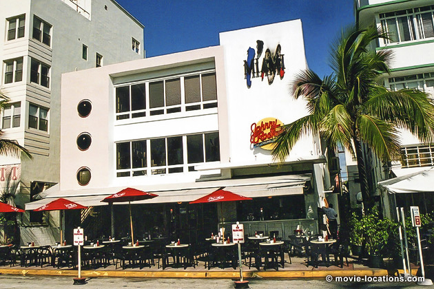
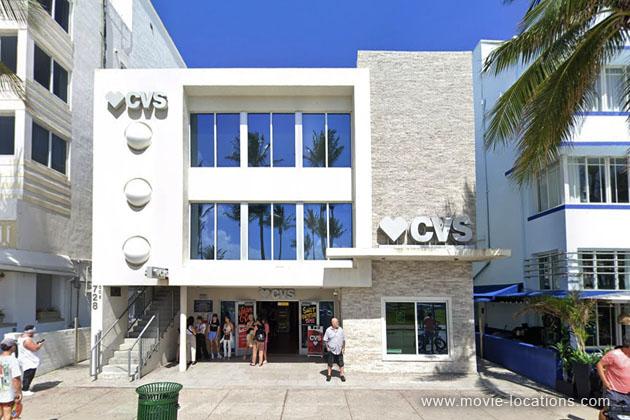

Scarface
Main Content

Another one of those movies where the critics got it totally wrong. Trashed on its first release, Brian de Palma's updating of the old gangster story – it's basically Richard III with coke, scripted by Oliver Stone – is now regarded as a classic.
When Cuban leader Fidel Castro opened up the harbour at Mariel in May 1980 to allow 125,000 Cubans to join relatives in the US, he took the opportunity to export some of the country’s toughest criminals. Smalltime thug Tony Montana (Al Pacino) grabs the opportunity to make it as a big-time drug lord.
Set in Miami and Bolivia, the movie’s locations are mostly divided between Florida and California.
The ‘Florida’ internment camp, where Montana wins his freedom by killing a Castro agent, was constructed under the knot of freeway interchanges at the intersection of I-10, the Santa Monica freeway, and I-110, the Harbor Freeway, downtown Los Angeles behind the New Los Angeles Convention Center.
Miami’s ‘Little Havana’ district, where Montana starts out working at the ‘El Paraiso’ lunch stand, was recreated at Little Tokyo in downtown Los Angeles.
Montana’s arrival in the art deco district of Miami Beach is impossible to fake, though, and was shot on Ocean Drive at 13th Street.

The ‘Sun Ray Apartments’, where Montana’s brother is dismembered by chainsaw, is 728 Ocean Drive between the Beacon and Colony hotels near 7th Street. The 1953 classic building was Johnny Rocket's when I had the chance to visit a few years ago. It's since been graced with a plaque commemorating the scene and although much of the rear of the building was demolished to become a CVS pharmacy, the frontage has thankfully been preserved.
The movie’s two estates, one supposedly in ‘Bolivia’, one in ‘Florida’, are both in the town of Montecito, on the California coast a few miles east of Santa Barbara.
Sosa’s ‘South American’ estate, where Omar (F Murray Abraham) is ousted, is Casa Bienvenida, Park Lane at East Valley Road, a rococo Italianate villa designed by architect Addison Mizner for magnate Alfred E Dieterich.
Montana’s own ‘Coral Gables’ estate is El Fureidis (‘Little Paradise’), 631 Para Grande Lane, a Mediterranean villa set in 10 acres of grounds, built for Waldron Gillespie, a wealthy upstate New Yorker, by Bertram Goodhue. Neither estate is open to the public.
The luxury hotel grounds, where Montana and pal Manny Ray (Steven Bauer) ogle women, are of the Fontainebleau Miami Beach, 4441 Collins Avenue. The hotel was famously seen in Goldfinger, and featured in The Bodyguard, with Whitney Houston and Kevin Costner.
In New York, the Gothic apartment block of the intended bomb victim is 5 Tudor City Place at East 41st Street, which was home to Tom Hanks in Splash! and to Norman Osborn in both Spider-Man and Spider-Man 2.
Visit Info
Visit The Film Locations
California
Visit: California
California | Los Angeles
Visit: Los Angeles
Flights: Los Angeles International Airport (LAX), 1 World Way, Los Angeles, CA 90045 (tel: 424.646.5252)
Travelling around: Los Angeles Metro
Florida
Visit: Florida
Visit: Miami & The Beaches
Flights: Miami International Airport, 2100 NW 42nd Avenue , Miami, FL 33126 (tel: 305.876.7000)
Stay at: the Fontainebleau Miami Beach, 4441 Collins Ave, Miami Beach, FL 33140 (tel: 305.538.2000)
Visit: Johnny Rocket’s, 728 Ocean Drive, Miami Beach, FL 33139 (tel: 305.531.6258)
New York
Flights: John F Kennedy International Airport, New York, NY 11430 (tel: 718.244.4444)
Visit: New York
Travel around: MTA